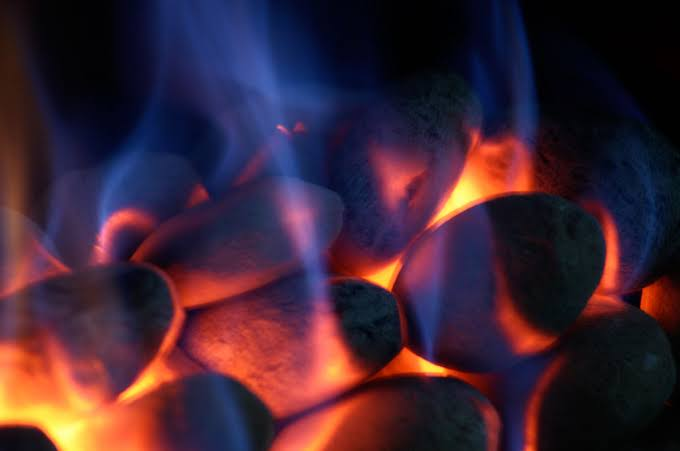

Formålet med dette kapitel er
Hvad har din morgenmad, en brændende skov og et stykke chokolade til fælles? Svaret er kemi.
Kemi er læren om alt omkring os – og om alt det, vi selv er lavet af. Mange forbinder måske kemi med hvide kitler, beskyttelsesbriller og mystiske lugte i et mørkt laboratorium. Men sandheden er, at du er omgivet af kemi hvert eneste sekund. Hver gang du bager en kage, trækker vejret, oplader din telefon eller ser et æble blive brunt, er det kemiske processer, der er på spil.
Kemi er faget der beskæftiger sig med stofs opbygning og stofs omdannelse. Udover at være et fag i sig selv, kan kemi ses som et vigtigt hjælpefag til bl.a. biologi og medicin.
På C-niveau omhandler faget kemi tre områder:
Ifølge kemien er alt stof opbygget af nogle små byggesten der hedder atomer. Der findes ca. 100 slags atomer. Atomer er kemiens legoklodser. Ud fra et ret begrænset slags atomer, kan man bygge alle de millioner af kemiske stoffer man i dag kender.
Atomer kan sættes sammen til større enheder der hedder molekyler. Fx er almindeligt vand opbygget af to forskellige slags atomer, men carbonhydrater og fedtstoffer (der findes i din kost) er opbygget af tre forskellige salgs atomer.
Nye kemiske stoffer kan dannes ud fra andre kemiske stoffer. Eksempelvis kan kul brænde. Det er det der foregår på et kraftvarmeværk (fx Amagerværket). Ved forbrændingen bruges der dioxygen (ilt) der findes i den atmosfæriske luft. Kul og dioxygen "forsvinder'' altså, mens til gengæld dannes der to nye stoffer, nemlig vand og carbondioxid. Vi siger at der sker en kemisk reaktion. Kul reagerer med dioxygen og danner vand og carbondioxid. Reaktioen kunne vi kortfattet skrive sådan: kul + dioxygen → vand + carbondioxid. Normalt skriver man dog en reaktion på en endnu kortere form, mere herom i næste kapitel.

Andre eksempler på kemiske reaktioner:
Ammoniak er et af verdens mest fremstillede kemikalier. Det bruges bl.a. som gødningsstof i landbruget. Ammoniak kan fremstilles ud fra stofferne dihydrogen og dinitrogen. Når en kemikalievirksomhed skal fremstille fx et ton ammoniak, skal de vide hvor meget dinitrogen og dihydrogen der skal anvendes. Det kan man gøre vha. mængdeberegninger.
Når vi brænder benzin af i en bilmotor, udledes der carbondioxid der kan have indflydelse på klimaet. Vha. mængdeberegninger kan man beregne hvor mange gram carbondioxid der dannes hver gang man brænder en liter benzin af.